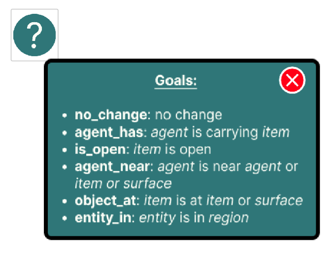

Introduction to Goals
Imagine that you are in a house with a robot named Stretch. Below is a map of the house that Stretch can move around in and the objects that it can interact with.

Now that you are familiar with the environment, let's see how you can use Polaris to give Stretch instructions using only goals.
What are Goals?
Goals are what the robot should achieve.. The robot will plan the sequence of actions to achieve a goal.
You can specify the goals that you want the robot to achieve within each step.
Now that you are familiar with the robot's environment, let's see how you can use Polaris to give the robot instructions using only goals! Note that the robot reads instructions from top to bottom.
Additional Information
Polaris will tell you whether or not the robot is able to perform the instructions that you provide it.
If the robot can execute your instructions, the following text will be shown.

If the robot cannot execute your instructions, the following warning sign will be shown.

You can click the help button on Polaris if you would like a full description of all of the actions.
If you are ready, click Next >> to start using Polaris!
« Previous Next »